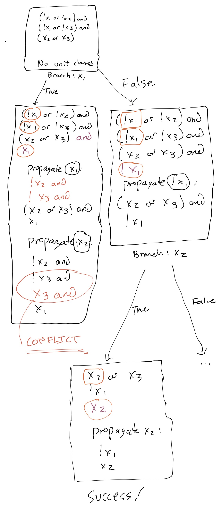
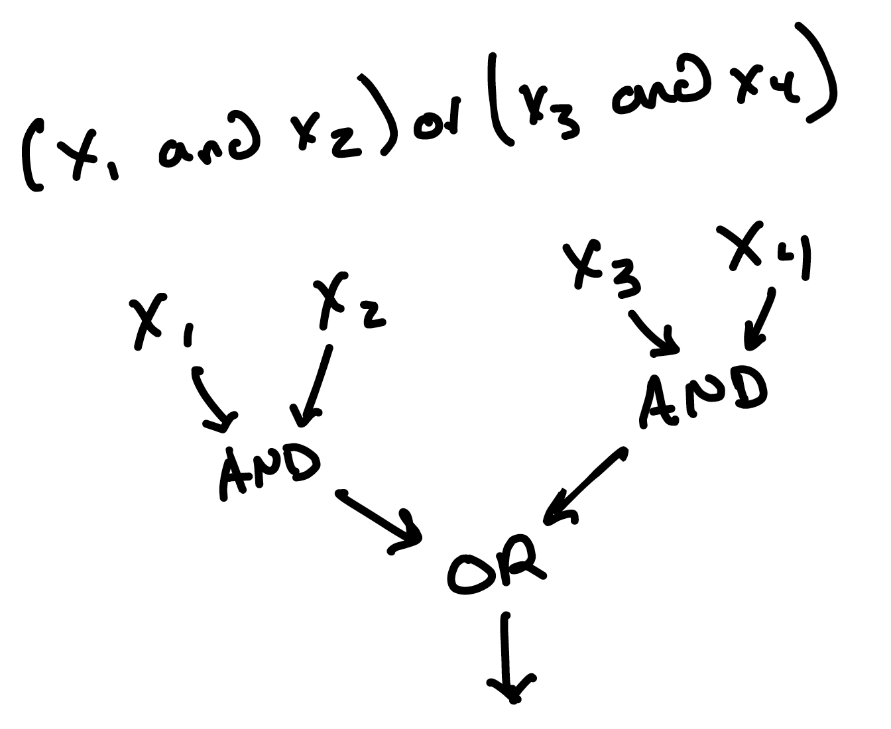

Satisfiability Solving¶
Suppose I asked you to solve a boolean constraint problem. Maybe it comes from Forge, and maybe it doesn't. Here's an example, in "Java syntax":
Is there a satisfying instance for this constraint? * If yes, what is it, and how did you obtain it? * If no, how did you reach that conclusion?
Here's another:
Same question. Is there a satisfying instance for this constraint? * If yes, what is it, and how did you obtain it? * If no, how did you reach that conclusion?
Truth Tables¶
We could build the table of all possibilities, and use it to search like so:
x1 |
x2 |
(x1 implies x2) |
x1 and (x1 implies x2) |
|---|---|---|---|
| T | T | T | T |
| T | F | F | F |
| F | T | T | F |
| F | F | T | F |
We've found a solution! But we needed to build the entire set of possibilities to do so.
Can We Do Better?¶
We don't actually know (at time of writing) whether it's possible to solve boolean satisfiability for arbitrary inputs without worst-case time exponential in the size of the input. This is one of the biggest unsolved questions, and certainly one of the most famous, in computer science. But we shouldn't let that discourage us. Plenty of problems are worst case exponential (or even more difficult) and we still solve them all the time.
Why so famous?
It turns out that if you can solve boolean SAT in polynomial worst-case time, you can also solve many other important problems in worst-case polynomial time. There are many such problems (e.g., graph coloring, longest simple path, bin packing, ...) but SAT is the most well-known.
If you take 1010, you'll learn more about the specifics.
Let's Try Anyway¶
Maybe we can do better sometimes. Let's just start, and see where we get to.
Pseudocode
The "code" in today's notes is pseudocode. The goal is to motivate the core ideas coming up, although you could certainly add a bit of extra detail to get runnable code.
A First Try¶
Here's a solution that recursively tries all combinations. It's kind of like building the truth table, except that instead of creating the table (which always uses exponential space) it just explores all possibilities (always using exponential time but not exponential space).
def solve(formula: BooleanFormula) -> bool:
remaining = variables_in(formula) # get list of variables used in the formula
if remaining.isEmpty():
return simplify(formula) # no variables left; simplify to true or false
else:
branch = remaining[0] # guess based on first variable v
true_result = solve(substitute(formula, branch, True)) # try v = true
false_result = solve(substitute(formula, branch, False)) # try v = false
return true_result || false_result # true if and only if _some_ guess worked
The function relies on three helpers, which we've left out for brevity:
simplify, which evaluates a formula with no variables. E.g., it turnsTrue and Falseto justTrue.substitute, which replaces a variable with a concrete boolean value. E.g., callingsubstitute(x1 and x2, x1, True)would produceTrue and x2.variables_in, which returns the set of variables used in a formula.
Again, this program doesn't actually build the entire table at any one time. It explores the entire set of possible instances, and so takes time worst-case exponential in the number of variables. But it doesn't need that much space, which is already an improvement.
However, its best case time is also exponential, which is rather disappointing. Surely we can do a lot better.
Maybe Luck Is With Us¶
The issue with the last solution is that it always explores, even if it doesn't need to. Instead, how about we only check one value at a time. If we find a True result for one specific substitution, we're done!
def solve(formula: BooleanFormula) -> bool:
remaining = variables_in(formula)
if remaining.isEmpty():
return simplify(formula)
else:
branch = remaining[0]
true_result = solve(substitute(formula, branch, True))
if true_result: # same as last version
return True # but allow early termination
else:
false_result = solve(substitute(formula, branch, False))
return false_result
Now, suddenly, the best-case and the worst-case aren't the same. The solver could be lucky: consider a formula like x1 and x2 and x3 and x4 and x5. The above algorithm only needs 5 recursive calls to return True; the previous one would need \(2^5\).
Of course, luck won't always be with us. Right? What's an example formula that would still need an exponential number of calls with the above code?
Think, then click!
How about: !x1 and !x2 and !x3 and ...? The first guess of True is always wrong for a formula like this.
Imposing Structure¶
Let's look back at our first example: x1 and (x1 implies x2). You may have taken advantage of some structure to figure out a satisfying instance for this formula. Namely, if we know that x1 holds, then we can propagate that knowledge into x1 implies x2 to deduce that x2 must hold---without needing to guess and try a value. There's nothing like this deduction in either of our programs so far.
The trouble is: if we're given an arbitrary formula, it's hard to pick out that (say) x1 is definitely true. But if we impose a little bit of structure on the input, it becomes easy in many cases. Let's do that now.
Conjunctive Normal Form¶
First, three definitions:
A literal is a variable or its negation. E.g., x1 and !x1 are both literals, but !!x1 and x1 or x2 are not.
A clause is a set of literals combined with "or"; you may sometimes hear this called a disjunction of literals. Because we can always rewrite an "or" as implication (and vice versa) in classical boolean logic, a clause can be viewed as a number of different potential implications.
A formula is said to be in conjunctive normal form (CNF) if it comprises a set of clauses that are implicitly combined with "and". We call it this because "conjunction" is just another name for "and"; a "normal form" is just a way of saying that a formula's shape follows a certain (often useful) structure.
If the input to our solver is in CNF, as the example formula x1 and (x1 implies x2) is (or rather, it would be if we'd wrote it equivalently as x1 and (!x1 or x2)), we can spot these opportunities to propagate knowledge quite quickly, just by searching for clauses of only one element.
A unit clause is a 1-element clause: a variable or its negation.
The empty clause is a 0-element clause, and is equivalent to False. Why is the empty clause equivalent to False?
Think, then click!
A clause is a big "or", and an "or" gives a set of ways the formula could evaluate to True. But an empty clause gives no such options!
From now on, we'll assume that we always have input in CNF. There's a trick to accomplish this, so let's keep focused on the solving, not on the conversion for now.
A Powerful Idea: Unit Propagation¶
If our input was x1 and (!x1 or x2), and we'd stored it as a set, that would be {x1, (!x1 or x2)}. We can check for unit clauses in time linear in the number of clauses. And if there is a unit clause, we can see whether there are opportunities to propagate that knowledge. This idea is called unit propagation.
But how does that actually work? Suppose we've identified a unit clause, in this case x1. Then, for every other clause C in the set, we can check whether:
- the clause
Ccontains the same literal as the unit clause; - the clause contains the opposite literal as in the unit clause; or
- neither of the above.
In the third case, we probably can't do any propagation, because there's no connection between the clauses. But what do you think we can do in either of the first two cases?
Think, then click!
- Does the clause
Ccontain the same literal as the unit clause?- If so, then
Cis subsumed by the unit clause:Cmust be satisfied givenx1holds! Delete the entire clauseC.
- If so, then
- Does the clause contain the opposite literal as in the unit clause?
- If so, then the clause
Ccannot possibly be made true by that opposite literal. Delete that literal fromC.
- If so, then the clause
Exercise: Here's a CNF formula. Solve it using unit propagation.
x1 and (x1 or x2 or x3) and (!x3 or x2 or !x4) and (!x2 or !x1) and x3
Think, then click!
First, we notice 2 unit clauses: x1 and x3. Then:
* Propagate x1, which lets us remove a clause entirely, and simplify another: x1 and (!x3 or x2 or !x4) and !x2 and x3. But now we have a new unit clause, as a result of simplifying!
* Propagating x3 gives us: x1 and (x2 or !x4) and !x2 and x3.
* Propagating !x2 gives us x1 and !x4 and !x2 and x3.
This is starting to look suspiciously like a boolean instance. The unit clauses are assignments to boolean variables, and part of this process deduces new ones.
Exercise: Here's a CNF formula. Solve it using unit propagation.
x1 and (x1 or x2 or x3) and (!x3 or x2 or !x4)
Notice this formula is a strict subset of the earlier one. Because the earlier one is satisfiable, so is this one! But does unit propagation alone suffice to discover the satisfiability?
Think, then click!
No. Unit propagating x1 will produce x1 and (!x3 or x2 or !x4), but we need some other way---besides just unit propagation---of breaking down the larger clause that remains.
Fortunately, if we mix unit propagation with our prior "guessing" algorithm, we make significant progress.
Adding Unit Propagation¶
def solve(formula: Set[Clause]) -> bool:
# are there any unit clauses? if so, propagate them
# keep doing so until there are no more changes
# Beware: mutation can be a source of bugs here...
old_formula, formula = propagate_unit_clauses(formula)
while formula <> old_formula:
old_formula, formula = propagate_unit_clauses(formula)
# Did we produce the empty clause? (We might represent the e.c. as {} or [] etc.)
if EmptyClause in formula:
return False
# Do we otherwise have only unit clauses remaining? (What could go wrong in this check?)
elif formula == units_in(formula):
return True
else:
branch = remaining[0]
# no longer substitute; instead, _add_ a unit clause to represent the "True" guess
true_result = solve(formula + {branch})
if true_result:
return True
else:
# no longer substitute; instead, _add_ a unit clause to represent the "False" guess
false_result = solve(formula + {!branch})
return false_result
Again, the amount of information we get from unit propagation is subject to luck (or, rather, the dependencies between variables and clauses in the formula we're given).
Think: Why did we stop substituting?
In prior versions, we substituted True or False into the formula. Now, we're adding a unit clause to represent the guess instead. Why did we make this change? One reason is that it's easier to explicitly represent the flow of this algorithm via the addition of unit clauses, since half of it is about unit propagation. More reasons may appear as we continue.
This idea---a recursive, backtracking search paired with unit propagation---is the foundation of one of the most famous boolean solver algorithms: DPLL (named after the authors: Davis, Putnam, Logemann, and Loveland). DPLL still forms the core of how most modern SAT-solvers work (although there are more ideas and optimizations not yet incorporated, such as learning from failure and deciding which variable to branch on).
Pure-literal elimination
DPLL technically has one more feature: pure-literal elimination. I'm glossing over that here. It's technically interesting, but not central to where we are right now. The idea is: if a variable appears in only one "polarity" (that is, only positive or negative throughout all clauses) then if the clause set is satisfiable at all, it must be satisfiable by some instance that agrees with the polarity of that variable. So if we just want to find a satisfying instance, why not just set that variable's value right away?
Returning more than a boolean¶
Returning just a boolean seems bad for the caller. After all, if Forge were using this solver, it would want the instance itself, not just that the instance exists. But there's another problem with returning a boolean: something related to testing. What is it?
Think, then click!
If we wanted to do property-based testing on the solver, returning True would force the testing predicate to solve the problem again. But if we returned an instance, the predicate would be much easier: just evaluate the formula in the instance, and see if it indeed satisfies the formula.
But how should we go about returning an instance, rather than True? To find out, let's actually look at the tree of recursive calls, and see what information we have, or could recover. Let's solve:
(!x1 or !x2) and (!x1 or !x3) and (x2 or x3)

In that bottom left call, how do we conclude "conflict?" In the other bottom call, how do we conclude "success"?
Think, then click!
Because there's one more unit-propagation step in each case that I haven't drawn! Unit propagating x3 when !x3 is present will produce the empty clause: False. And similarly in the other case: unit propagating x2 will eliminate the entire x2 or x3 clause.
Notice that every time we make a recursive call, there's an implicit set of assumptions involved. That is, there's always a partial instance of previously-selected guesses in effect at any point. We can make this explicit by adding a parameter to the function, and returning the guesses that produce a success:
# Note new input and output types
def solve(formula: Set[Clause], assumptions: Set[Literal]) -> Set[Literal]:
old_formula, formula = propagate_unit_clauses(formula)
while formula <> old_formula:
old_formula, formula = propagate_unit_clauses(formula)
remaining = variables_in(formula)
if remaining.isEmpty():
if simplify(formula):
return assumptions
else:
return False
else:
branch = remaining[0]
true_result = solve(formula + {branch}, assumptions + {branch : true})
if true_result <> False:
return assumptions
else:
false_result = solve(formula + {!branch}, assumptions + {branch : False})
return false_result
Hold on...
Does this actually work? Let's think about testing. We can use PBT to test our solver! What do we need? * A generator for clause sets; * A predicate that tests whether an instance satisfies a clause set.
If we try this out, we may find a potential issue. Here's an example we might be concerned about (but notice how many contingencies are involved in generating it!):
If our solver uses lexical order to decide what to branch on first, it's going to pick x1 before the others. And if it tries True first, we'll end up unit-propagating to:
because the first original clause is subsumed by x1, and the second can be unit-propagated into. Yet, if we only return the assumptions, rather than all derived unit clauses, we'll return {x1: True}, not {x1: True, x3: True}. Beware!
Total or Partial Instances?¶
So far, our algorithm will avoid making assumptions if it doesn't need to. This is good from a performance perspective but bad if the caller expects a total instance that maps every variable to a boolean. But unit propagation can delete clauses, resulting in variables just disappearing from the problem. E.g., solving x1 and (x1 or x5).
If our goal is to produce a total solver (and it usually is---Forge, for example, needs values for every possible tuple in every relation, even if they aren't constrained at all), we'll need to post-process the result and pick arbitrary values for variables that have no value in the assumption set. Traditionally, we'll make this easier on ourselves by passing a 3rd argument to the solver: the number of variables.
Heuristics: Which Variables? Which Values?¶
There are a bunch of heuristics for picking variables to branch on, picking boolean values, etc. that are beyond the scope of this class. There is also a second brilliant idea that powers model solvers: learning from failure. In these solvers, reaching a conflict results in learning a "conflict clause" which is added to know the knowledge base, and the solver leverages this to backtrack further than one level of recursion if it's able.
If you're curious about how solvers are built, check out CSCI 2951-O.
Converting to CNF¶
How should we convert an arbitrary boolean formula to CNF?
Naive Approach: Distributivity¶
We could start by using the distributive law: x1 and (x2 or x3) is equivalent to (x1 or x2) and (x1 or x3).
So if we have:
(x1 and x2) or (x3 and x4)
We could convert it to CNF by applying the distributive law twice to get:
(x1 or x3) and (x1 or x4) and (x2 or x3) and (x2 and x4)
There's a fundamental problem here, though. What do you see?
Think, then click!
This process will increase formula size exponentially in the worst case. That's unacceptable. (Consider what happens if we keep adding terms to the above shape: making the inner and formulas bigger and adding more of them.)
This is again pretty disappointing: if there is no equivalent CNF available for some formulas that isn't exponentially bigger, how can we practically use the algorithm we just invented?
The Tseitin Transformation¶
There's something else we could do. If we can't find an equivalent CNF, maybe we could make a trade-off. To help us on the way, here are a couple of definitions:
Two formulas A and B over some set of boolean variables V are said to be logically equivalent if they are satisfied by the exact same instances.
Two formulas A and B are said to be equisatisfiable when A is satisfiable if and only if B is satisfiable. Note that equisatisfiability doesn't require A and B to use the same variable sets; the instances can be over different variables.
The Idea
Of course, mere equisatisfiability doesn't immediately guarantee any structural connection between the two formulas. For this to work, we need to be able to map a solution to problem B back to the original problem A. So maybe there's a way we could productively add variables to the original, retaining the meaning of the original variables, and still somehow avoid the exponential blowup in CNF conversion?
Let's look at that formula again: (x1 and x2) or (x3 and x4). View it as a boolean circuit.

What if we assigned a new variable for every internal node of the tree? We'd have a1 and a2 for the and nodes, and o1 for the or node. The formula is true if and only if the or node is, so we'd have a unit clause: o1 in the new formula.
But what makes o1 true? Here's a definition in 3 constraints:
a1 implies o1,a2 implies o1, ando1 implies (a1 or a2).
We can rewrite these in CNF:
!a1 or o1,!a2 or o1, and!o1 or a1 or a2.
The and nodes have similar definitions:
(x1 and x2) implies a1a1 implies (x1 and x2)(x3 and x4) implies a2a2 implies (x3 and x4)
which can be rewritten:
!x1 or !x2 or a1!a1 or x1!a1 or x2!x3 or !x4 or a2!a2 or x3!a2 or x4
Together, these constraints are equisatisfiable with the original formula.
Moreover, they're something more than equisatisfiable. Just like we wanted, there's a useful relationship between the original variables and the new variables. We can always read off the values of x1, x2, x3, and x4 in a solution to the new constraints and get a solution to the original constraints. The values of the newly added variables express values for the intermediate nodes of the boolean circuit.
And that's how Forge's translation layer works.
Example of a "real" solver¶
You can see example code solving the N-queens problem via SAT here. I'm using the parallel Glucose solver, but you can plug in any solver you want; this Python script just builds a DIMACS standard CNF file.